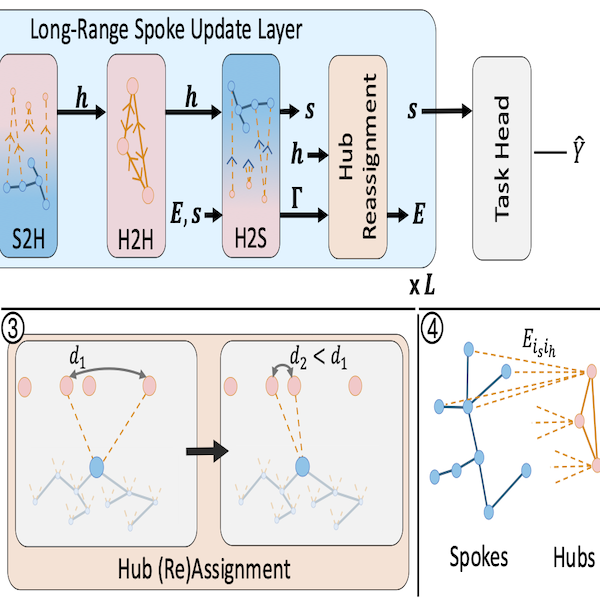

|
Tomer Borreda I'm an M.Sc. student at the Technion, advised by Prof. Or Litany. My research interests lie at the intersection of 3D Computer Vision and Generative Models. Prior to my graduate studies, I gained industry experience as a Software Engineer at Verily and Infinidat. I hold a B.Sc. in Computer Science and Physics (Double Major) from Tel Aviv University. |

|
Publications |

|
RadarGen: Automotive Radar Point Cloud Generation from Cameras
Tomer Borreda, Fangqiang Ding, Sanja Fidler, Shengyu Huang, Or Litany arXiv, 2025 project page / code / arXiv |
|

|
ReHub: Linear Complexity Graph Transformers with Adaptive Hub-Spoke
Reassignment
Tomer Borreda, Daniel Freedman, Or Litany TMLR, 2025 project page / code / arXiv |
This page design is based on a template by Jon Barron.